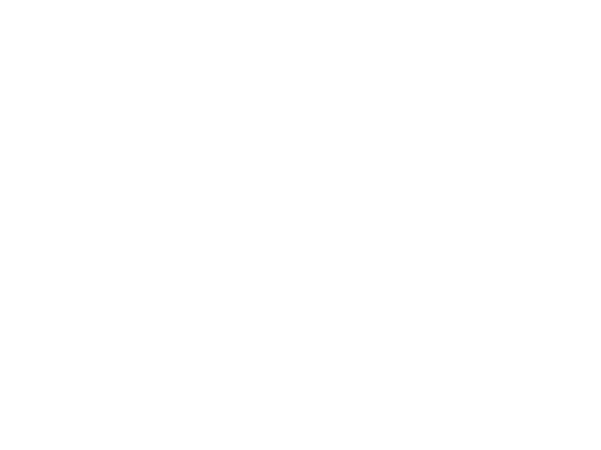
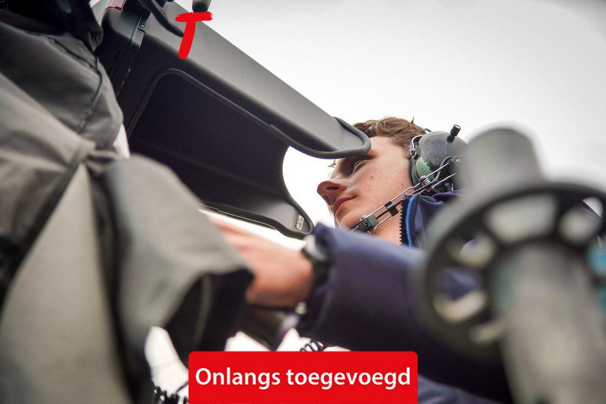
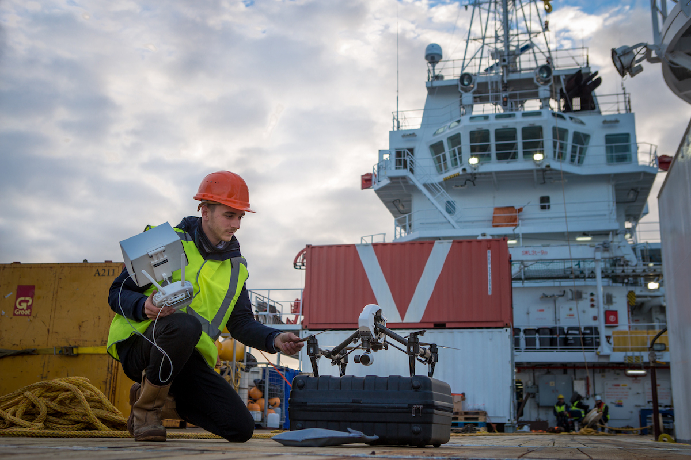
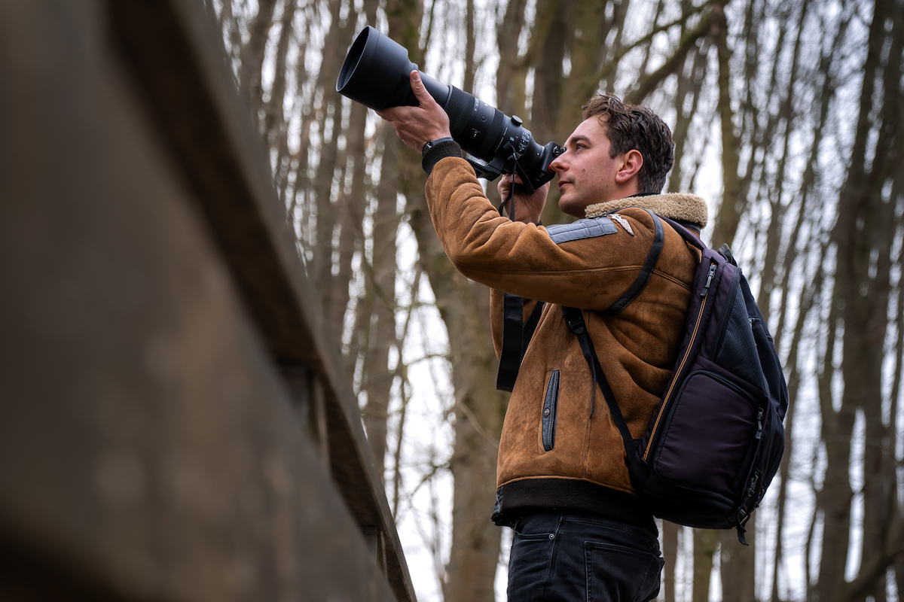

Televisie & ENG
Flexibel camerawerk voor reportages, items en producties waar snelheid en overzicht samenkomen.

Cameraman / Drone operator / Visual storyteller
Beeld met ritme, focus en gevoel voor het moment. Voor televisie, online producties, ENG, meercamera en dronewerk.
ervaring in televisie en online producties
wendbaar op locatie en scherp in teamverband
luchtbeelden met timing en technisch vertrouwen
Portfolio
Scroll horizontaal






Nieuwe beelden en stills


Wat ik doe
Flexibel camerawerk voor reportages, items en producties waar snelheid en overzicht samenkomen.
Rustig en precies draaien binnen grotere crews, met gevoel voor timing, lijn en regie.
Beelden die direct inzetbaar zijn voor branded content, social, corporate en korte formats.
Doordachte luchtbeelden in dual-operator setups, afgestemd op verhaal, beweging en veiligheid.

Over mij
Al meer dan tien jaar werk ik in en rond de televisie-industrie aan beelden die helder, bruikbaar en menselijk voelen. Van ENG en meercamera tot online producties en drone-opdrachten: ik denk mee vanaf het eerste draaiplan en blijf scherp tot het laatste shot.
Op set zoek ik naar de combinatie van techniek en aandacht. Het juiste kader, net dat extra licht, een schonere achtergrond of een beweging die het verhaal sterker maakt.
Samenwerkingen
Contact
Stuur een bericht, dan denk ik graag met je mee over aanpak, timing en wat er nodig is om met sterk materiaal thuis te komen.